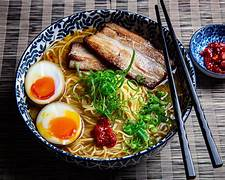

Miso Ramen
Um caldo rico e saboroso feito com pasta de miso, oferecendo um equilíbrio perfeito entre umami e cremosidade.
R$ 40,00
Adicionar ao carrinho
Shoyu Ramen

Clássico e equilibrado, este ramen tem um caldo à base de molho de soja, proporcionando um sabor levemente salgado e profundo.
R$ 35,00
Adicionar ao carrinho
Tonkotsu Ramen

Um caldo espesso e encorpado feito a partir de ossos de porco cozidos por horas, resultando em um sabor intenso e cremoso.
R$ 50,00
Adicionar ao carrinho